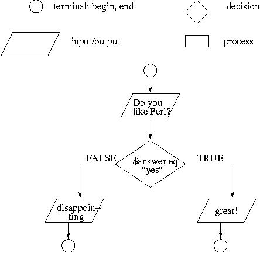
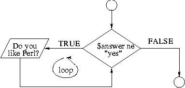
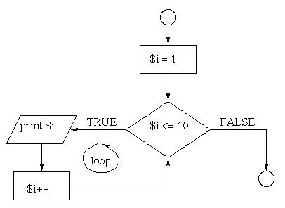

While

#!/usr/local/bin/perl -w
#
# while statement
#
$answer = "no";
while ($answer ne "yes"){
print "Do you like Perl? ";
$answer = <STDIN>;
chomp $answer;
if ($answer eq "yes") {
print "That is great!\n";
} else {
print "That is not the right answer! Try again.\n";
}
}
Exercise
Modify the program from above so that it asks users to "guess the lucky number". If the correct number is guessed the program stops, otherwise it continues forever.
Modify the program so that it asks users whether they want to guess again each time. Use two variables, $number for the number and $answer for the answer to the question whether they want to continue guessing. The program stops if the user guesses the correct number or answers "no". (In other words, the program continues as long as a user has not answered "no" and has not guessed the correct number.)
Using a counter
Write a program that asks five times to guess the lucky number. Use a while loop and a counter, such as
$counter = 1;
while ($counter <= 5) {
print "Type in the $counter number\n";
$counter++;
}
The program asks for five guesses (no matter whether the correct number was guessed or not). If the correct number is guessed, the program outputs "Good guess!\n", otherwise it outputs "Try again!\n". After the fifth guess it stops and prints "Game over.\n".
Last
In the previous example, insert "last;" after the "Good guess!\n" print statement. "last" will terminate the while loop so that users do not have to continue guessing after they found the number.
Setting a flag
Let users again guess five numbers but this time do not tell them immediately whether they were successful or not. After the while loop is finished print "The correct number was guessed\n" if the number was among the five guesses and "The correct number was not among them\n" otherwise. To implement this use a variable called $flag that is set to true (or 1) as soon as the number is guessed. After the while loop is finished, the truthvalue of $flag is evaluated in an if statement.
For

#!/usr/local/bin/perl -w
#
# for statement
#
for ($i =1; $i <= 10; $i++){
print "$i ";
}
Exercise
Modify the counter program from above using a for loop so that it asks the user for five guesses and then stops. Use "last" to terminate the for loop as soon as the correct number is guessed.